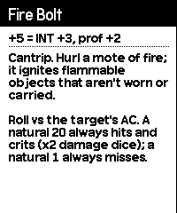

Try it
This is the real game, ported to your browser. Drag the crank in a circle (or scroll over the screen) to roll. Click the buttons or use the keys: ↑↓ pick a row, ←→ switch pages, X is Ⓐ (quick-roll), Z is Ⓑ (advantage), [] turn the crank and Esc is Menu.
Want every control and rule? Read the full manual.
Everything at the table, on 400×240 pixels


Rules at a pause
Press Menu and the left half of the pause screen explains the row you have selected: what it does and how its bonus adds up. Long text? Pick Rules to read it all, cranking to scroll.


Bring your own character
charsync is a small command-line tool for Mac, Windows and Linux. It turns a public D&D Beyond character into a Crit Crank hero and sends it to your Playdate over USB.
cd charsync
cargo install --path .
charsync import https://www.dndbeyond.com/characters/12345678It converts ability scores, saves, skills, HP, AC, spell slots, weapons, damage and healing spells, and limited-use features. Spell and feature descriptions show up on the pause screen and in the Rules viewer too. See the charsync README.
Install
- Download crit-crank.pdx.zip.
- Sideload it at play.date/account/sideload, or unzip it and copy
charsheet.pdxinto theGamesfolder in USB disk mode. - Or build it yourself with the Playdate SDK:
cd charsheet && make run.